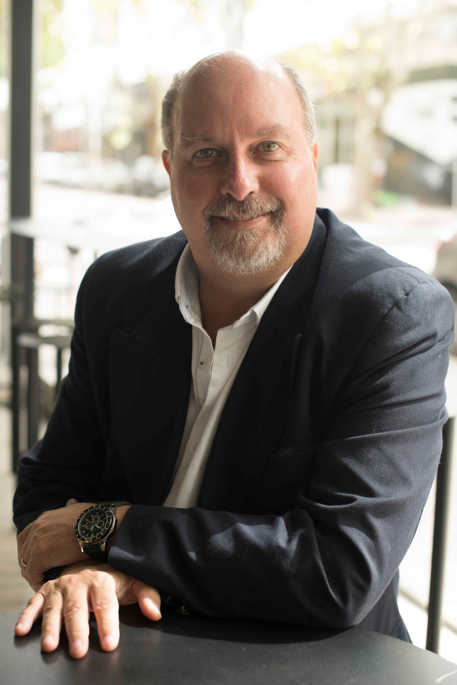
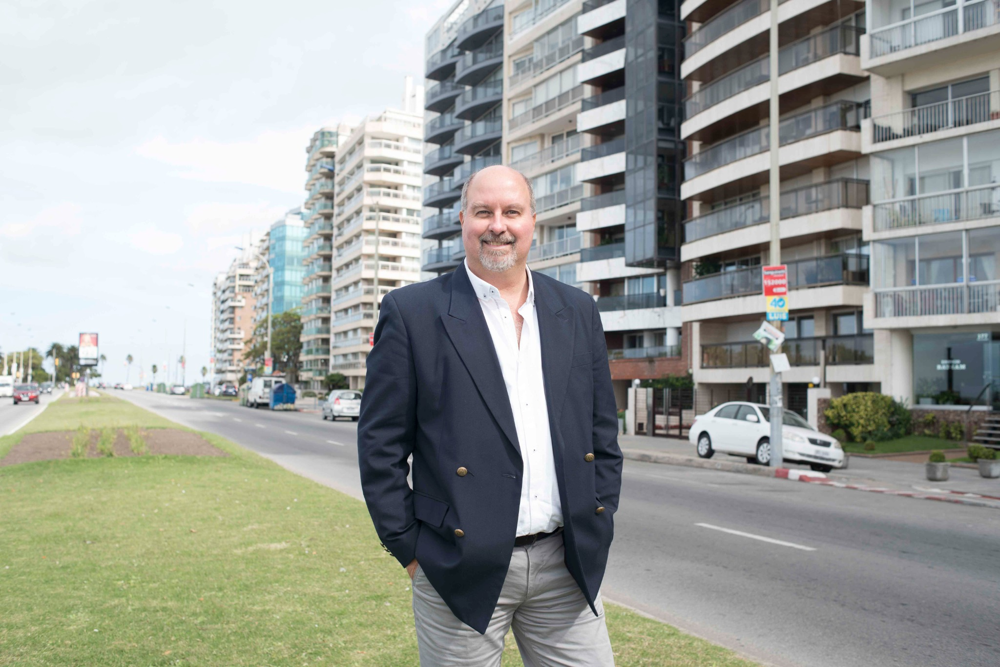

Proyecto
Producto, propuesta de valor, presentación y comercialización desde la mirada del inversor.
Investigación, inteligencia del inversor y experiencia aplicadas a decisiones concretas en Real Estate.

Acompaño a desarrolladores, empresas, inversores e instituciones a comprender mejor el mercado, interpretar al inversor y descubrir alternativas de actuación. Cada asesoramiento comienza con una pregunta: ¿qué necesitamos comprender para decidir mejor?
Producto, propuesta de valor, presentación y comercialización desde la mirada del inversor.
Inteligencia comercial, estrategia y aprendizaje para mejorar decisiones.
Comparaciones, precios, rentabilidades y oportunidades de inversión en América Latina.
Investigación para comprender cómo una ciudad puede atraer capital y proyectos.
Evalúa la vendibilidad de proyectos: cómo se presentan, comprenden y recorren desde la perspectiva del inversor.
Diagnóstico, Mystery Investor y Semáforo Moebius de cuatro colores.
28 ciudades · 15 países
Compara precios, superficies, alquileres y rentabilidades para interpretar mercados y oportunidades.

Contame qué decisión necesita tomar tu proyecto, empresa o institución. Podemos explorar juntos cómo aportar una mirada independiente y conocimiento aplicado.
Presentar una consulta →